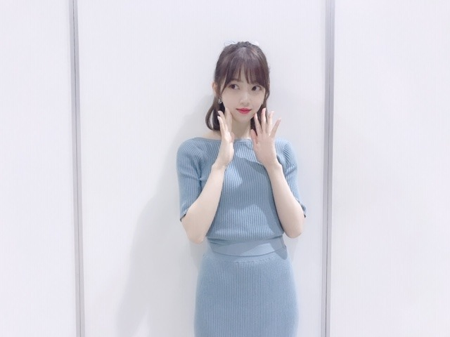
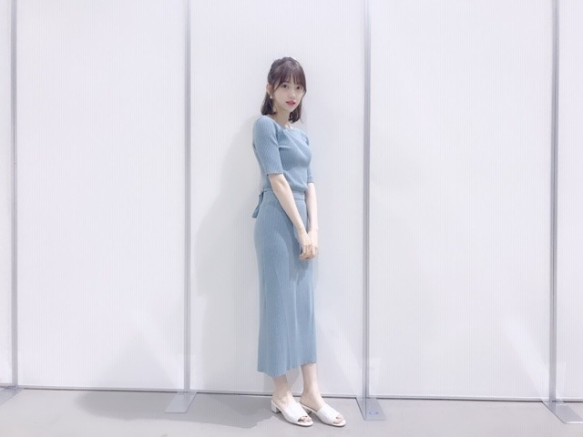
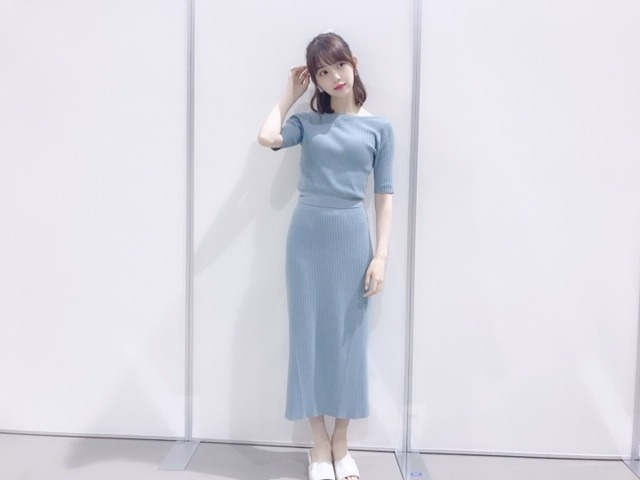
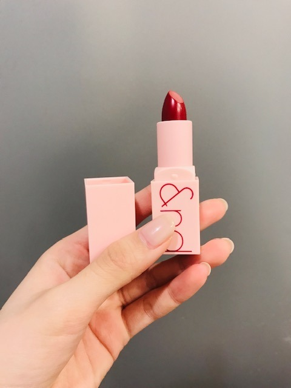
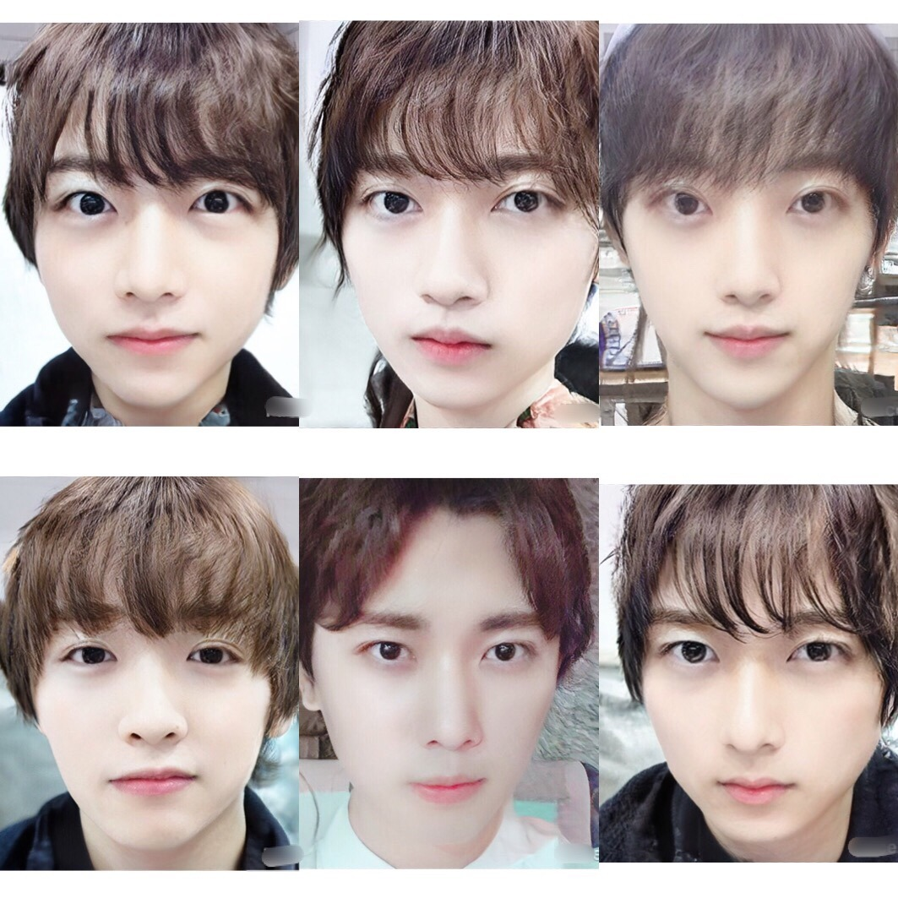

2019/0609Sunタオルをもらう夢を見たのははじめて
こんにちは！

FRAY I.Dのセットアップ
淡いブルーが好きで、服も小物もなにもかも
とにかくこの色を選びがち...
シンデレラブルーっていうのかな？
絶妙なくすみ具合がツボです


あ、今日実写版シンデレラ
やるみたいです
たった今CMを見て知りました
映画館で見た時、映像の綺麗さに鳥肌がたったなー
ドレスも綺麗だし
ブルーレイ買おうかな〜
アニメのシンデレラも小さい頃から沢山観てきて、シリーズの2、3も好きです
今日はらじらー！だからリアタイできないけど
帰ってから見ようっと
皆さま！
らじらー！聴いてね☺︎
romandの口紅を新しく買いました！

発色もいいしパーソナルカラーの
自分の季節に合わせて色も選べてオススメです✨
あとは、クリニークのチークを2色買いました
使ってみてまたブログに書きます
メンズ版 2期生(一部)
誰がタイプですか？

左上から日奈子、蘭世、私
左下からみり愛、純奈、絢音
笑
もうみんなでめっちゃ盛り上がって笑って楽しかった〜
私達 笑いすぎて絶対うるさかった( ; _ ; )笑
私は顔だけだと絢音くんがタイプ
告知
梅雨入りしましたねぇ
左下からみり愛、純奈、絢音
笑
もうみんなでめっちゃ盛り上がって笑って楽しかった〜
私達 笑いすぎて絶対うるさかった( ; _ ; )笑
私は顔だけだと絢音くんがタイプ
告知
「BOMB」与田ちゃん梅ちゃんと表紙
「東海ウォーカー」
「TVガイドAlpha EPISODE U」
「装苑」
「別冊spoon.」表紙
「シネマスクエア」
「seventeen」
「日経エンタテインメント！」
「プチコミック」
「BOMB」
「FINEBOYS」
6/12+act. （プラスアクト）
6/12「ar」初表紙
6/13「ベツコミ」
6/14「EX大衆」表紙
6/23「アップトゥボーイ」表紙
梅雨入りしましたねぇ
湿気で髪の毛がパーマをかけたようにふわついています
ビションフリーゼと対抗できるくらいには膨れ上がっていて。特に寝起き。時々メンバーや家族から「博士」と呼ばれたりもします
「おはよう、博士」
博士がみんな髪ふわふわとは限らないのに
偏見ですね
さて、
梅雨明けすると暑い日々が続きますので
梅雨明けすると暑い日々が続きますので
今のこのしっとりとした肌寒い日を楽しみましょう...
私は梅雨の時期に必ず風邪をひいているので
気をつけます
では(*･ω･)ノ
2019/06/09 12:48
コメント(359)
みおなちゃんブログ更新ありがとうございます！
私はあやねちゃんですね
男装姿！みおなちゃんと一緒で嬉しい！
また更新お願いします！
みおなちゃん可愛いくて好きです
私はあやねちゃんですね
男装姿！みおなちゃんと一緒で嬉しい！
また更新お願いします！
みおなちゃん可愛いくて好きです
未央奈ちゃん、こんばんは(^o^)/
『シンデレラ』はTVの番組欄で１週間先まで予約出来るので先週から録画予約者してましたよ( ＾∀＾)
金曜日は『美女と野獣』も『金曜ロードショー』でやってましたね
男装2期生の中では、俺の好み？から云うと絢音ちゃんが一番イケメンかな？
岡山はまだ梅雨入りしてないです(・o・)
『シンデレラ』はTVの番組欄で１週間先まで予約出来るので先週から録画予約者してましたよ( ＾∀＾)
金曜日は『美女と野獣』も『金曜ロードショー』でやってましたね
男装2期生の中では、俺の好み？から云うと絢音ちゃんが一番イケメンかな？
岡山はまだ梅雨入りしてないです(・o・)
あきちゃん、みおなちゃん全国ツアー行くので第二次当たるようにみおなちゃんパワー分けてくださいね。後8月の全国握手会の幕張メッセに行くのでよろしくお願いします。そしてもうすぐ公開の映画みおなちゃんの作品見に行きますね。そして、23枚目のシングルも全種類買いました。8月にみおなちゃんに明治神宮球場の３日で会えるのが楽しみです。乃木坂46の中で一番みおなちゃんが大好きだよ。だってセブンイレブンで開催の乃木坂46フェアでシ-ルとクリアファイル当たりました。❤❤❤❤❤❤❤❤❤❤❤❤❤❤❤❤❤❤❤❤❤❤❤❤❤❤❤❤❤❤❤❤❤❤❤❤❤
未央奈ちゃん、ひろっしーです！コメント投稿591回目です！
前回はブログ「パプリィカァ」にブログと「Mステ」と「うたコン！」と「レコメン！」の感想とノミネートのお祝いを書きました！
時間→「No.261 2019年6月 6日 01:17」
ブログ更新ありがとうございます！
改めて「第22回上海国際映画祭」の「アジア新人部門・優秀女優賞」ノミネートおめでとうございます！僕はLINEのニュースで知ったのですが、規模が大きすぎてビックリしました！感想は前回書かせて頂きましたが、本当に凄い事だと思います！皆さんに祝って貰えて、僕も凄く嬉しい気持ちになりました！未央奈ちゃんからも嬉しい気持ちが凄く伝わってきて、前にモバメでありましたが、未央奈ちゃんはとても素直だなと今回改めて思いました！堀未央奈としての挑戦を今回は劇場でですが、これからも多方面で見守る事が出来て未央奈ちゃん推しの皆さんは凄く幸せ者だなと思いました！
9時台の途中から「らじらー！」聴きました！「レコメン！」とは違う面白さがあるなと今回久し振りに聴き改めて思いました！あと今週は未央奈ちゃんとホ・リミオナちゃんの生の声を聴き凄く元気を貰ったので、来週からも頑張れそうです！
と、ホ・リミオナちゃんにも伝えて下さい(笑)
着ている服の色「くすみブルー」かと思ったら「シンデレラブルー」って言うんですね！検索してみたら「幸福を呼ぶ色」だそうです！僕も「シンデレラブルー」ではありませんが、実は仕事へ行く時に使用しているエナメルバッグが紺色・・・って青色と違うんかい(笑)
ですが、近似色なので良しとします(笑)
メンズ版2期生、K-POPっぽかったです！
全員カッコイイけど、僕も絢音くんですね！
来週の「乃木中」2期生特集やぁ！楽しみ～！
ここまで読んで頂きありがとうございました！
毎日お仕事お疲れ様です！体調にはくれぐれも気を付けて頑張ってくださいね！
おやすみおな～！
前回はブログ「パプリィカァ」にブログと「Mステ」と「うたコン！」と「レコメン！」の感想とノミネートのお祝いを書きました！
時間→「No.261 2019年6月 6日 01:17」
ブログ更新ありがとうございます！
改めて「第22回上海国際映画祭」の「アジア新人部門・優秀女優賞」ノミネートおめでとうございます！僕はLINEのニュースで知ったのですが、規模が大きすぎてビックリしました！感想は前回書かせて頂きましたが、本当に凄い事だと思います！皆さんに祝って貰えて、僕も凄く嬉しい気持ちになりました！未央奈ちゃんからも嬉しい気持ちが凄く伝わってきて、前にモバメでありましたが、未央奈ちゃんはとても素直だなと今回改めて思いました！堀未央奈としての挑戦を今回は劇場でですが、これからも多方面で見守る事が出来て未央奈ちゃん推しの皆さんは凄く幸せ者だなと思いました！
9時台の途中から「らじらー！」聴きました！「レコメン！」とは違う面白さがあるなと今回久し振りに聴き改めて思いました！あと今週は未央奈ちゃんとホ・リミオナちゃんの生の声を聴き凄く元気を貰ったので、来週からも頑張れそうです！
と、ホ・リミオナちゃんにも伝えて下さい(笑)
着ている服の色「くすみブルー」かと思ったら「シンデレラブルー」って言うんですね！検索してみたら「幸福を呼ぶ色」だそうです！僕も「シンデレラブルー」ではありませんが、実は仕事へ行く時に使用しているエナメルバッグが紺色・・・って青色と違うんかい(笑)
ですが、近似色なので良しとします(笑)
メンズ版2期生、K-POPっぽかったです！
全員カッコイイけど、僕も絢音くんですね！
来週の「乃木中」2期生特集やぁ！楽しみ～！
ここまで読んで頂きありがとうございました！
毎日お仕事お疲れ様です！体調にはくれぐれも気を付けて頑張ってくださいね！
おやすみおな～！
個別握手会本当にお疲れ様、ゆっくり休んでね
未央奈ちゃんブログ更新ありがとう！
握手会、スペイベお疲れ様( *´꒳`* )
くすみブルーのお洋服めっちゃ可愛い！
未央奈ちゃん白いからほんと似合う♡
romandの口紅つかったことないから
買ってみるね( ˶˙ᵕ˙˶ )
いつも情報ありがとう！
握手会、スペイベお疲れ様( *´꒳`* )
くすみブルーのお洋服めっちゃ可愛い！
未央奈ちゃん白いからほんと似合う♡
romandの口紅つかったことないから
買ってみるね( ˶˙ᵕ˙˶ )
いつも情報ありがとう！
未央奈ちゃんおはようございます‼ありがとうございます！楽しみにしてます‼頑張ります‼気をつけて下さい。ありがとうございます！
未央奈ちゃんおはようございます‼ありがとうございます！楽しみにしてます‼頑張ります‼気をつけて下さい。ありがとうございます！
顔だけなら純奈かな。
もはや男子にしか見えない(笑)
もはや男子にしか見えない(笑)
おはみおな(*´ω｀*)らじら─お疲れ様でしたヽ(￣▽￣)ノ・・・・みおな♪((( ；ﾟДﾟ)))怖かった・・・・です（ ＴДＴ）
未央奈ちゃんおはようございます！ありがとうございます！お疲れ様です！ありがとうございます！頑張ります‼大丈夫ですか？雨。
絢音くんが好きよ！
未央奈ちゃん更新ありがとー！
シンデレラブルーとても似合ってます！
姫様、今日もお綺麗でございます。
メンズ版２期生やばい！笑
特に純奈ちゃん。
こういう人おるやろ。笑
絢音ちゃんカッコいい！
ではでは
今日も素敵な１日を。
シンデレラブルーとても似合ってます！
姫様、今日もお綺麗でございます。
メンズ版２期生やばい！笑
特に純奈ちゃん。
こういう人おるやろ。笑
絢音ちゃんカッコいい！
ではでは
今日も素敵な１日を。
堀ちゃんが、一番かわいい〜
未央奈ちゃん、今日もお疲れ様です＞＜ゞ
Σ＠＠；
あら、やだ！どれもイケてる６人のメンズ♡
どなたも前世の面影を残していると思いきや
面影が全く感じられなかった純君だけは分からなかった＞＜；
一番を選ぶのに迷うかと思えば答えはすぐに出ちゃった！
一番は、やはり純君♡
センター分けが似合う男子なんて中々見かけないし、
顔立ちからして高身長、高学歴、高収入の３高男子なのは間違いないし、
コミュ力も高いと周りから評判だから３C男子なのも間違いなし♡
あ～～～ん、物理的にも精神的にも純君に包まれた～～～～～い♡♡♡
イケメンを見るとやっぱ乙女心が芽生えちゃうね！
え？なになに？
もう既に乙女になっているだって！？Σ＠＠；
これは失礼しました＠＠；
乙女になったつもりでコメント考えるの楽しかったなー(笑)
今度、純君に会ったら告白しようかしら？
未央奈ちゃん、私の恋が成就するよう祈っててね！(笑)
Σ＠＠；
あら、やだ！どれもイケてる６人のメンズ♡
どなたも前世の面影を残していると思いきや
面影が全く感じられなかった純君だけは分からなかった＞＜；
一番を選ぶのに迷うかと思えば答えはすぐに出ちゃった！
一番は、やはり純君♡
センター分けが似合う男子なんて中々見かけないし、
顔立ちからして高身長、高学歴、高収入の３高男子なのは間違いないし、
コミュ力も高いと周りから評判だから３C男子なのも間違いなし♡
あ～～～ん、物理的にも精神的にも純君に包まれた～～～～～い♡♡♡
イケメンを見るとやっぱ乙女心が芽生えちゃうね！
え？なになに？
もう既に乙女になっているだって！？Σ＠＠；
これは失礼しました＠＠；
乙女になったつもりでコメント考えるの楽しかったなー(笑)
今度、純君に会ったら告白しようかしら？
未央奈ちゃん、私の恋が成就するよう祈っててね！(笑)
アロエヨーグルトです⊂(ο･㉨･ο）⊃”くまﾃﾞｽ…
ストレートヘア堀殿♡きゃわわうれぴーぽーo(￣◎￣)o ﾊﾞﾌﾞｩ♡
ひまわり癒されまする[壁]ｴ＿)逆ﾁﾗﾘ♡
スぺイベ堀殿おつぽよピーナッツﾜﾝ (･x･U)≡≡≡３
ストレートヘア堀殿♡きゃわわうれぴーぽーo(￣◎￣)o ﾊﾞﾌﾞｩ♡
ひまわり癒されまする[壁]ｴ＿)逆ﾁﾗﾘ♡
スぺイベ堀殿おつぽよピーナッツﾜﾝ (･x･U)≡≡≡３
おはようございます‼︎
ブログ更新、ありがとうございます♪
くすみ色好き、ブレないですね‼︎
くすんだ色って、ある意味日本の美しさの象徴でもあるような気がします♪
日本の自然界には、くすんだ色合いのものがいっぱい。
鳥でも魚でも草花でも、日本古来のものでは、原色のものって少ないですよね‼︎
西洋タンポポより、日本タンポポの方が淡くて優しい色をしてます。
アメリカザリガニより、日本ザリガニの方が柔らかい色合いで、おそらく性格も優しいです(笑)。
そういえば、オレンジジュースよりみかんジュースの方が味も優しいし、色合いも淡い感じですよね‼︎
ウグイス色なんていうのも、日本らしくてとても綺麗な色だと思うし、鳥から名前をつけるあたりの感性もいいなって♪
実は昔の人の勘違いで、ウグイス色の鳥はメジロらしいんだけどね(笑)。
う〜ん、ちょっと話が逸れたなあ(笑)。
とにかく、日本人は淡い色合いに馴染みが深いし、よく似合うと思うんです。
もちろん人によるし、たまにイメチェンでいつもと違うコーディネートをするのは、いろんな表情を見せるという意味でいいと思うんだけどね♪
さて、二期生イケメン選手権。
自分も絢男に一票です‼︎(笑)
目元が凛々しくて、聡明そうな感じですよね♪
どんな設定なんだろう？
学校で1〜2を争う秀才なんだけど、なぜか不良集団とつるんでいる。
個人的には、そんなイメージです♪
さて、とうとう梅雨に入りましたね〜
なんか、今日は寒い1日になるみたいです。
ちょっと前まで連続真夏日なんて日もあったのに、体がなかなかついていかないですね(苦笑)。
梅雨の時期にいつも風邪をひいているとのこと、くれぐれもお気をつけください‼︎
未央奈に会える日を楽しみにしてます♪
ではでは、また。
今日も未央奈にとっていい1日になりますように♪
ブログ更新、ありがとうございます♪
くすみ色好き、ブレないですね‼︎
くすんだ色って、ある意味日本の美しさの象徴でもあるような気がします♪
日本の自然界には、くすんだ色合いのものがいっぱい。
鳥でも魚でも草花でも、日本古来のものでは、原色のものって少ないですよね‼︎
西洋タンポポより、日本タンポポの方が淡くて優しい色をしてます。
アメリカザリガニより、日本ザリガニの方が柔らかい色合いで、おそらく性格も優しいです(笑)。
そういえば、オレンジジュースよりみかんジュースの方が味も優しいし、色合いも淡い感じですよね‼︎
ウグイス色なんていうのも、日本らしくてとても綺麗な色だと思うし、鳥から名前をつけるあたりの感性もいいなって♪
実は昔の人の勘違いで、ウグイス色の鳥はメジロらしいんだけどね(笑)。
う〜ん、ちょっと話が逸れたなあ(笑)。
とにかく、日本人は淡い色合いに馴染みが深いし、よく似合うと思うんです。
もちろん人によるし、たまにイメチェンでいつもと違うコーディネートをするのは、いろんな表情を見せるという意味でいいと思うんだけどね♪
さて、二期生イケメン選手権。
自分も絢男に一票です‼︎(笑)
目元が凛々しくて、聡明そうな感じですよね♪
どんな設定なんだろう？
学校で1〜2を争う秀才なんだけど、なぜか不良集団とつるんでいる。
個人的には、そんなイメージです♪
さて、とうとう梅雨に入りましたね〜
なんか、今日は寒い1日になるみたいです。
ちょっと前まで連続真夏日なんて日もあったのに、体がなかなかついていかないですね(苦笑)。
梅雨の時期にいつも風邪をひいているとのこと、くれぐれもお気をつけください‼︎
未央奈に会える日を楽しみにしてます♪
ではでは、また。
今日も未央奈にとっていい1日になりますように♪
メンズ２期全員カッコイ♡
選べません(><＠)
友達に見せたら「女の子とは思えないって言ってたよ!!」
確かに女の子に見えない
ふつーにいそうな気がする
周りにいるんじゃね？
こーゆー子♡
好き♡
選べません(><＠)
友達に見せたら「女の子とは思えないって言ってたよ!!」
確かに女の子に見えない
ふつーにいそうな気がする
周りにいるんじゃね？
こーゆー子♡
好き♡
僕も絢音くんがタイプ。
絢音くんイケメンですねー、男でも憧れる顔
みりあくんは、生駒ちゃんに心なしか似てませんか？笑
みりあくんは、生駒ちゃんに心なしか似てませんか？笑
未央奈お疲れ様！
ブログ更新ありがとう！
淡いブルーめっちゃ似合うやん笑笑
その服も似合っててかわいい！
映画おれも見たい～！
口紅似合いそうだね
未央奈の男装イケメン～！
っていうかみんなイケメンやん笑笑
最近天気が崩れ始めてるから
体調気を付けてね
これからも応援してる！
がんばれー！
ブログ更新ありがとう！
淡いブルーめっちゃ似合うやん笑笑
その服も似合っててかわいい！
映画おれも見たい～！
口紅似合いそうだね
未央奈の男装イケメン～！
っていうかみんなイケメンやん笑笑
最近天気が崩れ始めてるから
体調気を付けてね
これからも応援してる！
がんばれー！
未央奈好き〜〜(^ ^)
ブログ更新ありがとう〜！
未央奈ちゃん本当にシンデレラブルー似合う…！乃木坂のくすみブルーの衣装もプリンセスみたいで素敵でした︎☺︎
男版2期生みんなイケメンすぎて…！
わちゃわちゃ楽しそうに騒ぐ2期生が想像できて、癒されました⸜(*ˊᵕˋ*)⸝
絢音くん本当にイケメンだし、純奈くん未央奈くんのK-POPアイドル感がすごい（笑）曲出してほしい！笑
私は顔だけだとみり愛くんがタイプだな〜でもデートしたいのは未央奈くんです笑
梅雨時期は髪がふんわりするよね(T_T)私も天然パーマが強化されてブワってなっちゃう…笑
博士未央奈さんのお写真待ってます！笑
昨日のらじらー最高でした！
ミオナザホラーはあまりの演技力に鳥肌が立ったし、ホさんのコーナーは笑いすぎて腹筋崩壊したし、青春コーナーではジブリみたいに爽やかさ全開のセリフにキュンキュンしました！
この時期は体調崩しやすいよね(;_;)身体に気を付けてお仕事頑張ってください！
未央奈ちゃん本当にシンデレラブルー似合う…！乃木坂のくすみブルーの衣装もプリンセスみたいで素敵でした︎☺︎
男版2期生みんなイケメンすぎて…！
わちゃわちゃ楽しそうに騒ぐ2期生が想像できて、癒されました⸜(*ˊᵕˋ*)⸝
絢音くん本当にイケメンだし、純奈くん未央奈くんのK-POPアイドル感がすごい（笑）曲出してほしい！笑
私は顔だけだとみり愛くんがタイプだな〜でもデートしたいのは未央奈くんです笑
梅雨時期は髪がふんわりするよね(T_T)私も天然パーマが強化されてブワってなっちゃう…笑
博士未央奈さんのお写真待ってます！笑
昨日のらじらー最高でした！
ミオナザホラーはあまりの演技力に鳥肌が立ったし、ホさんのコーナーは笑いすぎて腹筋崩壊したし、青春コーナーではジブリみたいに爽やかさ全開のセリフにキュンキュンしました！
この時期は体調崩しやすいよね(;_;)身体に気を付けてお仕事頑張ってください！
今回のブログのタイトルはどこか3rdアルバムを思い出しますね！
そして、衣装の色、シンデレラブルーっていうんですか？個人的にも好きな色でいいなと思います
そして今回もまた堀さんに似合ってますね！かわいいです！
ところで、昨日のらじらーサンデー聴きました！
堀さんの才能を感じる放送でしたね！
とくに青春対決の時間がかなりおもしろかったです！
個人的には今まで聴いたらじらーでいちばんおもしろかった回かなと思いますね！
というより、僕はこれまであまりラジオを聴く機会がなかったのは否めないですけど、らじらーという枠を越えて、今まで聴いたラジオでいちばんおもしろかったと言っても過言ではないかなと思います
そして、衣装の色、シンデレラブルーっていうんですか？個人的にも好きな色でいいなと思います
そして今回もまた堀さんに似合ってますね！かわいいです！
ところで、昨日のらじらーサンデー聴きました！
堀さんの才能を感じる放送でしたね！
とくに青春対決の時間がかなりおもしろかったです！
個人的には今まで聴いたらじらーでいちばんおもしろかった回かなと思いますね！
というより、僕はこれまであまりラジオを聴く機会がなかったのは否めないですけど、らじらーという枠を越えて、今まで聴いたラジオでいちばんおもしろかったと言っても過言ではないかなと思います
みおなちゃん、こんにちは。
らじらー、僕は聴いたよ、めっちゃおもしろかったよ。
１枚目の写メのみおなちゃん、めっちゃかわいいです。
みおなちゃん、体調に気をつけて仕事頑張ってね。
またコメントするね。
らじらー、僕は聴いたよ、めっちゃおもしろかったよ。
１枚目の写メのみおなちゃん、めっちゃかわいいです。
みおなちゃん、体調に気をつけて仕事頑張ってね。
またコメントするね。
すみません。
別のブログに投稿するコメント文を
間違って投稿してしまいました。
不快な思いをさせてしまったら
申し訳ありません。
ーーー本来のコメントはこちらです。ーーー
こんにちは！
メンズ版2期生 面白かったです。
今度は2期生全員のメンズ版も
見てみたい。
それでは！ 失礼します。
別のブログに投稿するコメント文を
間違って投稿してしまいました。
不快な思いをさせてしまったら
申し訳ありません。
ーーー本来のコメントはこちらです。ーーー
こんにちは！
メンズ版2期生 面白かったです。
今度は2期生全員のメンズ版も
見てみたい。
それでは！ 失礼します。
最近また素敵になったみおちゃんへ
まずはそんなことがあっただなんて…と、どんまい(^ ^)未央奈
そうなんや…って、そのフレーズはある日にみおちゃんが言っていて、あ〜↑ってなったんだよね(^ ^)
最新のブログ、その中の話題について触れたメール(結構長文かも？)を眠る前に送ったから、承認されたら読んでみて♪(^ ^)(※ちょっと頑張ってみた！)
去る者追わず、切り替え、ね。これからも応援してるよ☆(^ ^)
ではは！
まずはそんなことがあっただなんて…と、どんまい(^ ^)未央奈
そうなんや…って、そのフレーズはある日にみおちゃんが言っていて、あ〜↑ってなったんだよね(^ ^)
最新のブログ、その中の話題について触れたメール(結構長文かも？)を眠る前に送ったから、承認されたら読んでみて♪(^ ^)(※ちょっと頑張ってみた！)
去る者追わず、切り替え、ね。これからも応援してるよ☆(^ ^)
ではは！
こんにちは〜
今日は、、雨だね〜
、、タイトルの〜タオルをもらう夢〜の意味は、、
、、タオルの持つ性質から、、〜相手を包み込む優しさ〜を、、受け取った、ってことじゃないかな〜
、、仕事が、、上手くいっていて、忙しい、今、大事なことだよね〜
、、じゃあ、、またね〜
今日は、、雨だね〜
、、タイトルの〜タオルをもらう夢〜の意味は、、
、、タオルの持つ性質から、、〜相手を包み込む優しさ〜を、、受け取った、ってことじゃないかな〜
、、仕事が、、上手くいっていて、忙しい、今、大事なことだよね〜
、、じゃあ、、またね〜
かわいすぎ！早く握手会いきたいなー
こんにちは！
スーパーカップCMとっても美味しそうです✨
まいやんの妖精姿も似合ってるけども、、
みおちゃんは食べる女神様みたいですよ♡
顔だけ選挙でも未央ちゃんは俺の一番だし、
男装していても一番可愛いらしいですよ♡
らじらーサンデーとっても面白かったです！
メールを送ったけど読まれませんでした～泣
後輩と一緒だととっても頼もしく思えるし、
私服のセットアップ姿も大人っぽいですね♡
オオゾ・ノモモコさんの名前もツボったし、
ホ・リミオナさんは期待通りシュールです☆
みおちゃんの青春はとっても潔かったです！
みおちゃんの真っ直ぐさにキュンしました♡
イエモンさんの曲も色っぽくて大好きです！
バレッタも聴けてとっても嬉しかったです♪
バレッタMVの最後で放った弾丸は、、
俺のハートをも射抜いていたのですね～☺
スーパーカップCMとっても美味しそうです✨
まいやんの妖精姿も似合ってるけども、、
みおちゃんは食べる女神様みたいですよ♡
顔だけ選挙でも未央ちゃんは俺の一番だし、
男装していても一番可愛いらしいですよ♡
らじらーサンデーとっても面白かったです！
メールを送ったけど読まれませんでした～泣
後輩と一緒だととっても頼もしく思えるし、
私服のセットアップ姿も大人っぽいですね♡
オオゾ・ノモモコさんの名前もツボったし、
ホ・リミオナさんは期待通りシュールです☆
みおちゃんの青春はとっても潔かったです！
みおちゃんの真っ直ぐさにキュンしました♡
イエモンさんの曲も色っぽくて大好きです！
バレッタも聴けてとっても嬉しかったです♪
バレッタMVの最後で放った弾丸は、、
俺のハートをも射抜いていたのですね～☺
あら～、ポーチの中に入ってたイヤホンや化粧品無くなっちゃったのか辛いね
どっかに届けられてないのかな？
どうゆう場所で無くしちゃったの？。
メール見たとき、大事な物が無くなったり、落としたりすると辛くなっちゃうよね。
未央奈ちゃん大丈夫？
見つかると願ってます！
どっかに届けられてないのかな？
どうゆう場所で無くしちゃったの？。
メール見たとき、大事な物が無くなったり、落としたりすると辛くなっちゃうよね。
未央奈ちゃん大丈夫？
見つかると願ってます！
堀ちゃんブログありがと！
セットアップ可愛いです！
メンズ2期生迷いますね〜。
でも僕も絢音くんですかね笑
セットアップ可愛いです！
メンズ2期生迷いますね〜。
でも僕も絢音くんですかね笑
いつもブログ更新ありがとう！
未央奈ちゃんのブログ見て、テレビでシンデレラを見ました！
私もジブリやディズニー映画好きです！笑
ディズニー映画はメッセージ性もあるから、
見た後も心に響きますね！
勇気と優しさを持つこと
未央奈ちゃんは２つともかな備えてるなー
と思いながら見てました笑
未央奈ちゃんはアラジンの実写も見るのかな？
シンデレラブルーの服、すごい似合ってる
昨日は体調を崩していたのですが、
未央奈ちゃんの画像を見て、体調が一気に良くなりました笑
私はそんな単純な男です笑
今週は肌寒いですから、体調には十分に気をつけてくださいね！
未央奈ちゃんのブログ見て、テレビでシンデレラを見ました！
私もジブリやディズニー映画好きです！笑
ディズニー映画はメッセージ性もあるから、
見た後も心に響きますね！
勇気と優しさを持つこと
未央奈ちゃんは２つともかな備えてるなー
と思いながら見てました笑
未央奈ちゃんはアラジンの実写も見るのかな？
シンデレラブルーの服、すごい似合ってる
昨日は体調を崩していたのですが、
未央奈ちゃんの画像を見て、体調が一気に良くなりました笑
私はそんな単純な男です笑
今週は肌寒いですから、体調には十分に気をつけてくださいね！
堀ちゃんお疲れ様です！
ブルーのドレスめちゃくちゃ可愛いです！
2期生みんなの男子姿イケメンでカッコイイ！
惚れ惚れします！
湿気が多くて髪の毛が乱れるのはすごく分かります！
でもこれからも普段通りにか頑張ってください！！
ブルーのドレスめちゃくちゃ可愛いです！
2期生みんなの男子姿イケメンでカッコイイ！
惚れ惚れします！
湿気が多くて髪の毛が乱れるのはすごく分かります！
でもこれからも普段通りにか頑張ってください！！
未央奈お疲れ様
梅雨入りするけど仕事頑張って
梅雨入りするけど仕事頑張って
堀さん、こんばんは。
ブログの2枚目の写真は立ち姿が美しいです。くすんだ淡いブルーは白い肌に合うんですね。
らじらー聞きました。ホラーっぽく言うのが面白かったです。毎回らしさを引き出してくれるいい番組ですね。
あと2期生メンズ版の堀さんは無表情すぎると思います。もうちょっと凛々しい顔してくれたら堀さんがタイプです。次回の工事中の2期生企画も楽しみです。
「博士」とは実験に失敗して爆発した博士なのか、それとも単にお茶の水博士なのか、実物を見て確認したいです。もし博士呼ばわりが嫌なら、逆にフラスコ持って白衣を着ていくことで「髪型じゃなく服装をいじられてるんだな」と納得できるのではないでしょうか。
梅雨の風邪心配ですね。でもひく可能性が高いと分かってるのなら準備できていいですよね。風邪のとき用のアイスとか今から用意しとくのもいいかもしれないですね。では、梅雨が明けるまで博士によろしくお伝えください。
ブログの2枚目の写真は立ち姿が美しいです。くすんだ淡いブルーは白い肌に合うんですね。
らじらー聞きました。ホラーっぽく言うのが面白かったです。毎回らしさを引き出してくれるいい番組ですね。
あと2期生メンズ版の堀さんは無表情すぎると思います。もうちょっと凛々しい顔してくれたら堀さんがタイプです。次回の工事中の2期生企画も楽しみです。
「博士」とは実験に失敗して爆発した博士なのか、それとも単にお茶の水博士なのか、実物を見て確認したいです。もし博士呼ばわりが嫌なら、逆にフラスコ持って白衣を着ていくことで「髪型じゃなく服装をいじられてるんだな」と納得できるのではないでしょうか。
梅雨の風邪心配ですね。でもひく可能性が高いと分かってるのなら準備できていいですよね。風邪のとき用のアイスとか今から用意しとくのもいいかもしれないですね。では、梅雨が明けるまで博士によろしくお伝えください。
未央奈
お仕事お仕事お疲れ様です
イケメンが勢揃いですね
ちなみに正直に答えると
自分はきいちゃんがタイプです
今日も仕事頑張って
SONYでした
755コメント中
ホットギミック早く観たい
お仕事お仕事お疲れ様です
イケメンが勢揃いですね
ちなみに正直に答えると
自分はきいちゃんがタイプです
今日も仕事頑張って
SONYでした
755コメント中
ホットギミック早く観たい
未央奈ちゃん、おはようございます。
らじらー聴きました。未央奈ちゃんの声、とっても聴きやすくて素敵です。ホラーは怖いような感じがあったけど、やっぱりカワイイが勝ってました‼
今日もラジオあるけど、東海地方限定で東京では聞けないみたい。残念です。
週末は上海映画祭ですね、レッドカーペットを歩く女優・堀未央奈を早く見たい。
乃木坂46と頑張ってるcuteでsmartな未央奈ちゃんを応援しています。
らじらー聴きました。未央奈ちゃんの声、とっても聴きやすくて素敵です。ホラーは怖いような感じがあったけど、やっぱりカワイイが勝ってました‼
今日もラジオあるけど、東海地方限定で東京では聞けないみたい。残念です。
週末は上海映画祭ですね、レッドカーペットを歩く女優・堀未央奈を早く見たい。
乃木坂46と頑張ってるcuteでsmartな未央奈ちゃんを応援しています。
鹿です⊂(ο･㉨･ο）⊃”くまﾃﾞｽ…
ニット堀殿きゃわわうれぴーぽーo(￣◎￣)o ﾊﾞﾌﾞｩ♡
ポチポチfightだぷーq(T▽Tq)(pT▽T)p
ほんじつもかつ丼パワー100万馬力でばいころまる( ;-(ｴ)-)ゞｸﾏｯﾀﾅｧ…
ニット堀殿きゃわわうれぴーぽーo(￣◎￣)o ﾊﾞﾌﾞｩ♡
ポチポチfightだぷーq(T▽Tq)(pT▽T)p
ほんじつもかつ丼パワー100万馬力でばいころまる( ;-(ｴ)-)ゞｸﾏｯﾀﾅｧ…
これ二期生全員、いや乃木坂全員見てみたいな～
絢音くんいいですよね！メンバーからも大人気だったよね！
次の乃木中二期生特集ですね。
めっちゃ楽しみです(^ー^)
絢音くんいいですよね！メンバーからも大人気だったよね！
次の乃木中二期生特集ですね。
めっちゃ楽しみです(^ー^)
堀ちゃん、大好きだよー
チャァオ～～!☆彡
博士、こんにちは～～⤴️⤴️❕❤️❤️❤️❤️❤️笑顔
今日は～～～～⤴️⤴️
その～～～～・・
大丈夫でしたかぁ～～～⤴️⤴️❕❔❤️❤️❤️❤️❤️笑顔
ここのところ梅雨入りで天気が悪かったから
おいら、完璧に油断して
ふと、ベランダのプランターを見たら
しっかり育った～～⤴️⤴️
デカクなったインゲン豆を70本
アシタバ数本、「ボア」となったパセリ、三つ葉を～～～～⤴️⤴️❕・・・
バシバシとるはめになったよぉ～～～⤴️⤴️❕❤️❤️❤️❤️❤️笑顔
めちゃ疲れたぁ～～～⤴️⤴️❕❤️❤️❤️❤️❤️笑顔
野菜でお腹いっぱいになりそぉ～～～⤴️⤴️❕笑顔
まぁ、取れたては美味しからいいかなぁ～～⤴️⤴️❕❔笑顔
みおちゃんも、野菜をたくさん摂ってお仕事頑張ってねぇ～～⤴️⤴️❕❤️❤️❤️❤️❤️
バイバイ❕❤️❤️❤️❤️❤️笑顔
(イチゴもとれたから、食べよ❕❤️❤️笑顔)
☆大人しい、おすまし！より☆彡
みおなちゃん、こんにちは。
明治エッセルスーパーカップ SweetSの新CM、僕は見たよ。みおなちゃん、めっちゃかわいかったよ。
明治エッセルスーパーカップSweetS マンゴー杏仁、僕は買ってきて、食べたよ。めっちゃおいしかったです
みおなちゃん、体調に気をつけて仕事頑張ってね。
またコメントするね。
明治エッセルスーパーカップ SweetSの新CM、僕は見たよ。みおなちゃん、めっちゃかわいかったよ。
明治エッセルスーパーカップSweetS マンゴー杏仁、僕は買ってきて、食べたよ。めっちゃおいしかったです
みおなちゃん、体調に気をつけて仕事頑張ってね。
またコメントするね。
今日！献血のイベントに参加したんだね。
献血なんて、そんなにしないからな～
未央奈ちゃんがこうゆうイベントに参加すると
若い世代の人が少しは考える、いい機会になるかもね？
俺は二十歳になり、未央奈ちゃんは同じ年代から見ると献血について考えさせられるな
献血なんて、そんなにしないからな～
未央奈ちゃんがこうゆうイベントに参加すると
若い世代の人が少しは考える、いい機会になるかもね？
俺は二十歳になり、未央奈ちゃんは同じ年代から見ると献血について考えさせられるな
堀未央奈シンデレラ
淡いブルーワンピース
似合ってます
夏ツアー頑張れ
楽しみにしてます。
頑張れファイトおー
淡いブルーワンピース
似合ってます
夏ツアー頑張れ
楽しみにしてます。
頑張れファイトおー
みおな〜♪
こんばんはっ！
ご無沙汰しております
生きてます
遅くなったけど、
Sing Out！発売おめでとうございます
いい曲だね、
今までの乃木坂にない
力強さを感じます
ライブで一緒にclapしたいな
ずっきゅん依存症の同僚で
何事にも完璧主義で
見ていて窮屈な生き方を
している人がいます
｢オレはイタリア語がペラペラなんだけど、
意味はわからないんだ｣
｢パリは寒いときに行くといいよ。
行ったことないけど。｣
｢オレは100mを9秒で走れたよ。
バイクで。｣
ずっきゅん依存症の敬愛する
芸能界一いい加減な男と呼ばれる
高田純次さんの言葉です
いい加減は良い加減
人生完璧に生きなくったって
全然O.K.
そもそもO.K.って言葉自体
その語源はとてもいい加減
｢all correct｣(全部正しい)というのをふざけて
｢oll korrect｣と書いた人がいて
さらにそれを略して
｢O.K.｣と記したのが始まり
｢O.K.｣自体、全然O.K.じゃないんです(笑)
I am not OK.
You are not OK.
And that's OK.
(私はOKじゃない。あなたもOKじゃない。
でも、それでOKだ。)
肩の力を抜いて良い加減で生きていこうよ
えぇ、生きましょうよ
こんばんはっ！
ご無沙汰しております
生きてます
遅くなったけど、
Sing Out！発売おめでとうございます
いい曲だね、
今までの乃木坂にない
力強さを感じます
ライブで一緒にclapしたいな
ずっきゅん依存症の同僚で
何事にも完璧主義で
見ていて窮屈な生き方を
している人がいます
｢オレはイタリア語がペラペラなんだけど、
意味はわからないんだ｣
｢パリは寒いときに行くといいよ。
行ったことないけど。｣
｢オレは100mを9秒で走れたよ。
バイクで。｣
ずっきゅん依存症の敬愛する
芸能界一いい加減な男と呼ばれる
高田純次さんの言葉です
いい加減は良い加減
人生完璧に生きなくったって
全然O.K.
そもそもO.K.って言葉自体
その語源はとてもいい加減
｢all correct｣(全部正しい)というのをふざけて
｢oll korrect｣と書いた人がいて
さらにそれを略して
｢O.K.｣と記したのが始まり
｢O.K.｣自体、全然O.K.じゃないんです(笑)
I am not OK.
You are not OK.
And that's OK.
(私はOKじゃない。あなたもOKじゃない。
でも、それでOKだ。)
肩の力を抜いて良い加減で生きていこうよ
えぇ、生きましょうよ
どの表紙の表情も、堀さんは、バッチリ決まってます。小さな幸せに感謝できる堀さんの考え方は、素晴らしいです。頭がいいんですね、知的に見えますし、神々しいほど、きれいです。品もあるし、堀さんが一番可能性あります。本当です。
おはよう！こんにちは！こんばんは！
みおちゃん♪
夢でタオルを、もらったの？笑
どんなタオルだろう。やっぱりふわふわしてるやつかな？
かわいい。。
シンデレラブルーかぁ。いいねぇ〜
超似合ってるよ！！✨
お、シンデレラみたよー
らじらー聴きながらだったから場面を目で追ってただけだけども。笑
ほんと。綺麗なドレスと靴だったなぁ。
よっ、さすがブルーレイアンバサダー！
らじらー笑いまくりだった。笑
ホさんも青春トークも(怖い話も)よかったよー！☺︎
最高ですっ！
綺麗な手だね。
ブログ楽しみ♪
これ。超笑った。
メンズ版 ２期生(一部)
こんなんやってたらそりゃ盛り上がっちゃうっしょ。笑
絢音くんいいよねー。純奈くん見るたびに笑うわ。これは、、笑う
ar楽しみ〜〜！！今日だーい！
注文したから今日家に届くー！☺︎
ビションフリーゼに対抗できるの？笑
すご。
博士。笑った。
おはよ！博士！笑
わかる。。今この涼しい感じが好き。。
必ずなんだ(笑)
あったかい服装と食べ物で過ごしてね♪
では！おやすみ！(^-^)
みおちゃん♪
夢でタオルを、もらったの？笑
どんなタオルだろう。やっぱりふわふわしてるやつかな？
かわいい。。
シンデレラブルーかぁ。いいねぇ〜
超似合ってるよ！！✨
お、シンデレラみたよー
らじらー聴きながらだったから場面を目で追ってただけだけども。笑
ほんと。綺麗なドレスと靴だったなぁ。
よっ、さすがブルーレイアンバサダー！
らじらー笑いまくりだった。笑
ホさんも青春トークも(怖い話も)よかったよー！☺︎
最高ですっ！
綺麗な手だね。
ブログ楽しみ♪
これ。超笑った。
メンズ版 ２期生(一部)
こんなんやってたらそりゃ盛り上がっちゃうっしょ。笑
絢音くんいいよねー。純奈くん見るたびに笑うわ。これは、、笑う
ar楽しみ〜〜！！今日だーい！
注文したから今日家に届くー！☺︎
ビションフリーゼに対抗できるの？笑
すご。
博士。笑った。
おはよ！博士！笑
わかる。。今この涼しい感じが好き。。
必ずなんだ(笑)
あったかい服装と食べ物で過ごしてね♪
では！おやすみ！(^-^)
未央奈ちゃん、ひろっしーです！コメント投稿592回目です！
前回はノミネートのお祝いと「らじらー！」とブログの感想を書きました！
時間→「No.305 2019年6月10日 02:12」
今日は休みだったので本屋さんへ行きました！そこで明日発売予定の「ar」があり見事フラゲ出来ました！一緒に「Zoom in 大野智②」も買ったのですが、実は女性誌を買うのは初めてでして・・・正直言うと、少し恥ずかしかったです！あぁ～申し訳ない！ごめんなさい！
ネタバレになっちゃうので言えませんが、表紙から中身まで全部最高でした！天候も味方してくれて良かったね！青空×堀未央奈=最強～！
可愛いのから綺麗なのまで、こんなにも変わるものなんだと、メイクって凄いなと改めて思いました！
またブログで話聞かせてね！待ってま～す！
ここまで読んで頂きありがとうございました！
毎日お仕事お疲れ様です！体調にはくれぐれも気を付けて頑張ってくださいね！
おやすみおな～！
前回はノミネートのお祝いと「らじらー！」とブログの感想を書きました！
時間→「No.305 2019年6月10日 02:12」
今日は休みだったので本屋さんへ行きました！そこで明日発売予定の「ar」があり見事フラゲ出来ました！一緒に「Zoom in 大野智②」も買ったのですが、実は女性誌を買うのは初めてでして・・・正直言うと、少し恥ずかしかったです！あぁ～申し訳ない！ごめんなさい！
ネタバレになっちゃうので言えませんが、表紙から中身まで全部最高でした！天候も味方してくれて良かったね！青空×堀未央奈=最強～！
可愛いのから綺麗なのまで、こんなにも変わるものなんだと、メイクって凄いなと改めて思いました！
またブログで話聞かせてね！待ってま～す！
ここまで読んで頂きありがとうございました！
毎日お仕事お疲れ様です！体調にはくれぐれも気を付けて頑張ってくださいね！
おやすみおな～！


やっぱり淡いブルーがお似合いです、見ていて落ち着くホッとする可愛さ、癒し(*´ー｀*)
堀ちゃんはブルーも白もオレンジも、どんな色も似合ってて、纏ってる色によって雰囲気が違うのは当然なんですが、どの色でも違う似合い方をしてるというか、なんと表現すればいいのか分からないんですが…笑
とにかくどんな色を纏った堀ちゃんも全力で可愛くて大好きです！言葉が見つからず勢いでまとめてしまってすみません笑
そしてハーフアップもめちゃくちゃ可愛い！大好きです！
久しぶりに見られた気がして嬉しいです(o^^o)♩
そしてそして、らじらー！お疲れさまでした！
堀ちゃんの声で日曜の夜から癒しチャージを貰って、明日からまた1週間頑張れそうです(o^^o)♩
堀ちゃんがいる青春ならもう一回青春に戻りたいなぁとしみじみ笑
そしてホさんもお久しぶりでしたね！( ´ ▽ ` )笑
堀ちゃんのラジオめっちゃ好きなのでまたらじらー！にも出てほしいな〜、特番で単独ラジオとかも密かに期待してます(^^)笑
2期生男顔ver.めっちゃ面白いです、系統が分かれててリアル！笑
絢音くんめちゃめちゃイケメンですね、男としてはこんな顔になりたい(o^^o)
堀ちゃんは大学のミスターコングランプリっていう印象です、伝わりますかね？笑
やっぱりみなさん顔立ちが綺麗なのでイケメンですね〜、羨ましい( ´ ▽ ` )
めちゃ面白いので、またこういうことあったら教えてくださいー！笑
さてさて早いもので6月ももう10日、最近は梅雨を感じる気候ですね(^^)
基本的には晴れが好きですが、雨の音とか、雨上がりの雰囲気とかも好きなのでこの季節もいいなぁと思います( ´ ▽ ` )
雨の道を歩くときって自然と力が入って疲れやすいですし、身体も冷えるので、体調には気をつけてくださいね( ´ ▽ ` )
といっても風邪を引いてしまうときは引いてしまうものなので、そのときは仕方ないやと割り切るつもりで、肩肘張らずリラックスして梅雨も梅雨で楽しみましょう〜(^^)
夏が待ち遠しいです！
来週は乃木中が2期生フィーチャー回ということで！今からとても楽しみです！！(o^^o)
では！またコメントさせてください〜(*･ω･)ノ